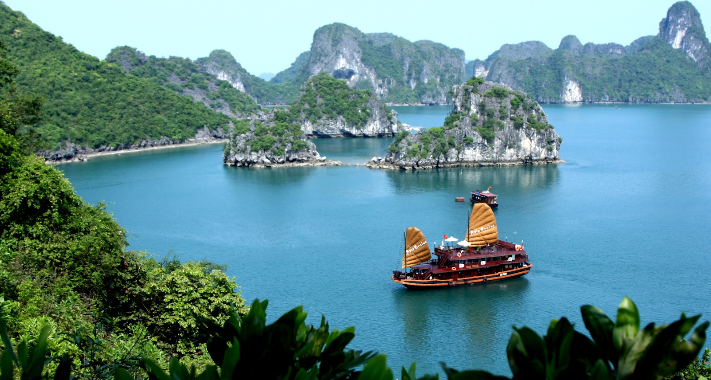

Giới thiệu về Vịnh Hạ Long
Vịnh Hạ Long được biết đến là không chỉ là di sản thế giới UNESCO mà còn là một trong những kỳ quan thiên nhiên nổi tiếng thế giới. Nhưng ít người biết rằng Quần thể Vịnh Hạ Long bao gồm 02 vịnh hoang sơ tuyệt đẹp khác là vịnh Lan Hạ và vịnh Bái Tử Long (từ đây gọi tắt Quần thể Vịnh Hạ Long này là Vịnh Hạ Long).
Với nhiều danh lam thắng cảnh, hệ động thực vật đa dạng, phong phú có ý nghĩa khảo cổ và địa chất lớn, có dấu mộc gắn liền giá trị văn hóa và lịch sử và gần cửa ngõ quốc tế, Vịnh Hạ Long được coi là một trong những địa điểm nổi tiếng nhất của Việt Nam với du khách nước ngoài.
Vị trí địa lý
Vịnh Hạ Long nằm ở phía tây của Vịnh Bắc Bộ Việt Nam, cách thủ đô Hà Nội khoảng 170 km hoặc 3,5 – 4 tiếng bằng ô tô. Trung tâm thành phố Hạ Long nằm sát biển ở phía bắc của vịnh. Vịnh Hạ Long có tổng diện tích là 1.553 km2, bao gồm 2 vịnh nổi tiếng là Vịnh Bái Tử Long ở phía đông và Vịnh Lan Hạ (nơi có Đảo Cát Bà) ở phía nam.
Vịnh Hạ Long không chỉ được du khách biết đến với những hang động tự nhiên được kiến tạo từ hằng triệu năm nằm rải rác trên 1.969 hòn đảo lớn nhỏ mà còn nổi tiếng thế giới với thảm thực vật phong phú và các loài sinh vật đa dạng.
Gía trị địa chất
Vịnh Hạ Long được du khách toàn cầu biết đến là kỳ quan thiên nhiên thế giới, nhưng không nhiều du khách biết rằng Ủy ban Di sản Thế giới UNESCO đã công nhận vịnh Hạ Long vào danh mục Di sản thiên nhiên Thế giới vì những giá trị nổi bật ở 2 khía cạnh thẩm mỹ và địa chất - địa mạo. Nhiều nghiên cứu cho thấy các núi đá vôi ở đây đã trải qua hơn 500 triệu năm dưới nhiều điều kiện và môi trường khác nhau để tạo thành cảnh quan đặc biệt và hiếm có như ngày hôm nay.
Phần lớn các đảo trên Vịnh Hạ Long là kiểu hình thái Phong Linh (Fenglin karst), một trong những dạng hình thái hiếm nhất trong quá trình kiến tạo núi đá vôi. Đa số các hòn đảo được kiến tạo từ những các khối đá vôi dạng tháp, dạng nón, có vách đứng hoặc rất dốc. Các đảo nằm độc lập rải rác trên vịnh với độ cao từ 50- 100m và tỉ lệ chiều cao - chiều rộng khoảng 6:1. Một hình thái karst khác ở Hạ Long là Phong Tùng (Fengcong karst) với đặc điểm nổi bật là các khối nổi cao chụm vào nhau thành một số đỉnh, giữa chúng có các hố trũng, phễu.
Cảnh đẹp Vịnh Hạ Long không chỉ là sự hài hòa giữa đất trời và biển cả mà còn ở những hòn hang, động chứa đựng trong lòng hàng nghìn hàng vạn các tác phẩm độc đáo bằng nhũ đá của mẹ thiên nhiên. Trong số đó, các cơ quan chủ quản hiện nay vẫn đóng cửa một số lượng lớn các hang, động đá với mục đích bảo tồn. Chỉ một số ít được mở ra cho du khách thăm quan. Những hang động được nhiều du khách ưa thích có thể kể đến như: Động Thiên Cung, Hang Đầu Gỗ, Hang Sửng Sốt, Hang Bồ Nông và Hang Trinh Nữ.
Giá trị sinh học
Trên Vịnh Hạ Long, các đảo nhỏ phần lớn chỉ có cây bụi thấp trong khi những đảo lớn là nơi sinh sống của nhiều loài chim quý hiếm với thảm thực vật nhiệt đới đặc trưng. Đặc biệt là đảo Cát Bà, nơi có Vườn quốc gia Cát Bà, hấp dẫn du khách không chỉ vì những bãi biển hoang sơ tuyệt đẹp mà còn ở kho sinh học khổng lồ. Nơi đây có từ rừng mưa nhiệt đới nguyên sinh tới rừng ngập mặt và các rặng san hô. Hòn đảo này cũng là nơi sinh sống của một số loài linh trưởng quý hiếm như Voọc Cát Bà (hay còn gọi là voọc đầu vàng), loài động vật nằm trong sách đỏ hiện nay chỉ còn khoảng 60 cá thế sống sót trên trái đất..
Bên cạnh đó, Vịnh Hạ Long còn là nơi trú ngụ của hơn 1.000 loài động vật biển, hơn 160 loại san hô đã được xác định. Ở những nơi có san hô, mật độ bao phủ khoảng 30% diện tích đáy biển (đặc biệt ở một số nơi là 80%) với độ sâu phổ biến là 4-6m so với mặt nước biển.
Vịnh Hạ Long thực sự là một kỳ quan thế giới, là một trong những điểm thu hút du khách lớn nhất ở Việt Nam. Đó cũng là nơi bạn có thể bơi lội thỏa thích trên những bãi biển hoang sơ tuyệt đẹp, chèo thuyền kayak trên vùng biển xanh biếc; khám phá những núi đá cao chót vót tưởng như cao vút lên trời xanh trên các hòn đảo; thưởng thức những món ăn hải sản địa phương tươi ngon trong khi ngắm cảnh hoàng hôn hay bình minh tuyệt đẹp. Hãy đến thăm quan, trải nghiệm và tận hưởng kỳ nghỉ tại Vịnh Hạ Long!
Comment

Tôi cảm thấy chưa đủ thông tin về địa điểm du lịch nào.
- Oct 21, 2016
- Reply